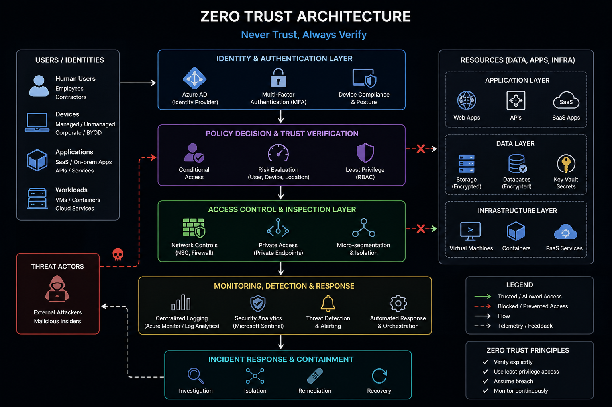

Featured Work

Azure Landing Zone ↗
Secure hub-spoke architecture with firewall, private endpoints, and CAF alignment.
↓ Improved security posture and deployment consistency
View Case Study →

Terraform Modules ↗
Reusable modules enabling scalable deployments.
↓ Reduced deployment complexity and operational overhead
View Case Study →

Zero Trust Architecture ↗
Identity-first model with segmentation and least privilege access.
↓ Reduced attack surface and prevented lateral movement
View Case Study →